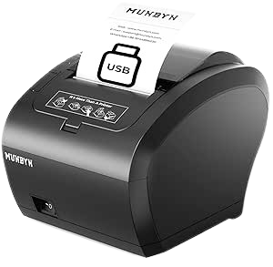

Expériences de Stage et Projets Web
Introduction
Lors de notre stage dans l'entreprise que je vais présenter prochainement, nous sommes impliqués dans la réalisation de projets web. Les maîtres de stage, jouant le rôle de clients, définissant les objectifs et les attentes pour chaque projet.
Réunion Initiale et Présentation des Propositions
Lors de notre première réunion, nous avons dû présenter nos propositions, abordant à la fois les aspects visuels et budgétaires des projets. Bien que l’exercice puisse sembler complexe, nous avons réussi à formuler des propositions convaincantes. Nous avons même anticipé des évolutions potentielles en discutant, par exemple, de plafonds budgétaires pour certaines solutions.
Compétences Mobilisées
Ces moments mettent en lumière les compétences que nous avons acquises au cours de nos deux années de formation. Grâce à notre expérience diversifiée en gestion de projets, nous avons pu aborder cette tâche avec minutie et une certaine aisance. Nous sommes désormais habitués à ce type d'exercice.
Développement et Révision du Projet
Pour cette première semaine, j'ai consacré une grande partie de mon temps à la gestion de projet. Ayant commencé à coder une version préliminaire du projet avant le début du stage, il a été nécessaire que les autres membres de l’équipe s’imprègnent de ce code. Cette version initiale a permis d’identifier des limites et des modifications nécessaires.
Nous avons finalement décidé de refaire le projet, en tenant compte des travaux déjà réalisés. Cette approche nous a permis de gagner un temps précieux dans la réalisation de la nouvelle version, que nous espérons définitive.
Aspects Financiers et Techniques
Parmi les points abordés lors de cette première réunion, nous avons calculé divers frais, tels que l’hébergement et le nom de domaine, en veillant à maintenir une marge de manœuvre sur le budget. Une de nos suggestions pour répondre au besoin de réception des commandes par le personnel du restaurant a été la mise en place d’une imprimante connectée.
En utilisant une Raspberry Pi Pico et une imprimante thermique, nous avons proposé un système pratique et économique pour imprimer les reçus des commandes directement sur place, simplifiant ainsi la gestion des commandes en ligne lors des périodes de forte affluence.
Communication et Synthèse
Nous avons ensuite synthétisé la réunion et envoyé un récapitulatif par mail aux maîtres de stage, mentionnant les besoins des clients, nos réponses en tant que développeurs, ainsi que leurs choix sur les solutions proposées afin de procéder à leur mise en place.
Réflexion Personnelle
Ces exemples montrent comment nous avons structuré notre travail, en tenant compte des besoins clients tout en optimisant notre temps et nos ressources. Notre capacité à anticiper et à proposer des solutions créatives nous a permis de répondre aux attentes des clients, même si le projet n'est pas encore terminé.
Au-delà des compétences techniques, cette semaine m'a permis de mettre en valeur mes compétences en communication et en gestion d'équipe. Cela rapelle l'importance de la clarté dans les échanges et de la précision dans la documentation des réunions et des décisions prises. Cette expérience a renforcé ma confiance en mes capacités à gérer des projets complexes et à travailler efficacement en équipe.
Je suis également devenu plus conscient des défis techniques et logistiques liés au développement de solutions web pour des clients réels. Cela m'a poussé à être plus rigoureux dans mon approche, à tester minutieusement chaque fonctionnalité et à anticiper les besoins futurs des utilisateurs.